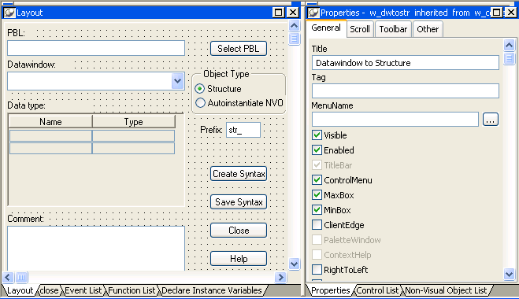

You design windows in the Window painter. The Window painter has several views where you specify how a window looks and how it behaves. The Window painter looks similar to the User Object painter for visual user objects and it has the same views. For details about the views, how you use them, and how they are related, see "Views in painters that edit objects".
The default layout for the Window painter workspace has two stacked panes with the Script and Properties views at the top of the stacks.
Most of your work in the Window painter is done in three views:
This illustration shows the Layout view at the top of one of the stacks.

For information about specifying window properties, see "Defining the window's properties".
For information about adding controls and nonvisual objects to a window, see "Adding controls" and "Adding nonvisual objects".
For information about coding in the Script view, see "Writing scripts in windows " and Chapter 7, "Writing Scripts ."